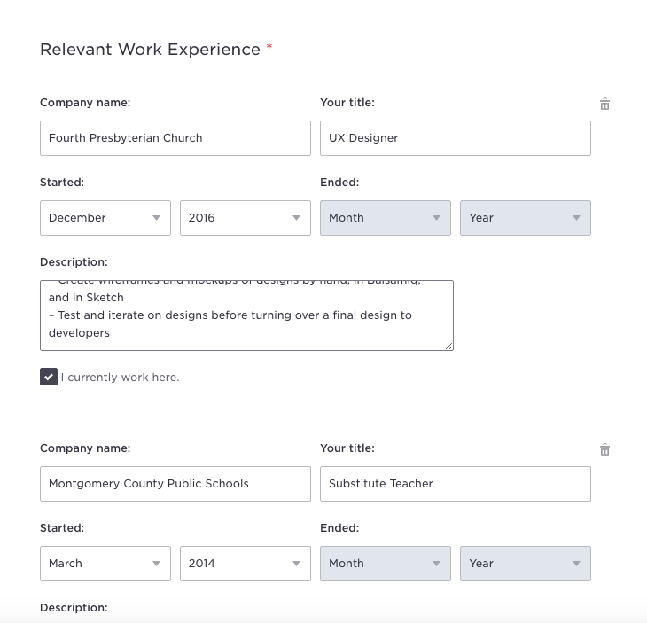
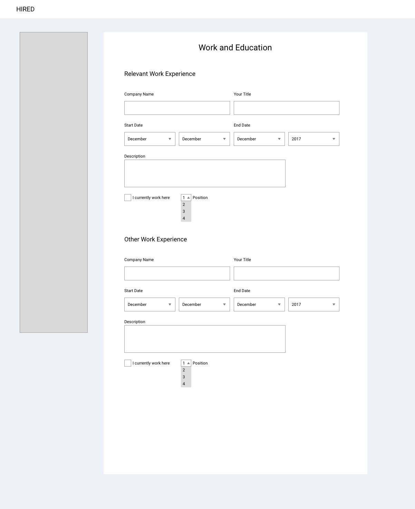
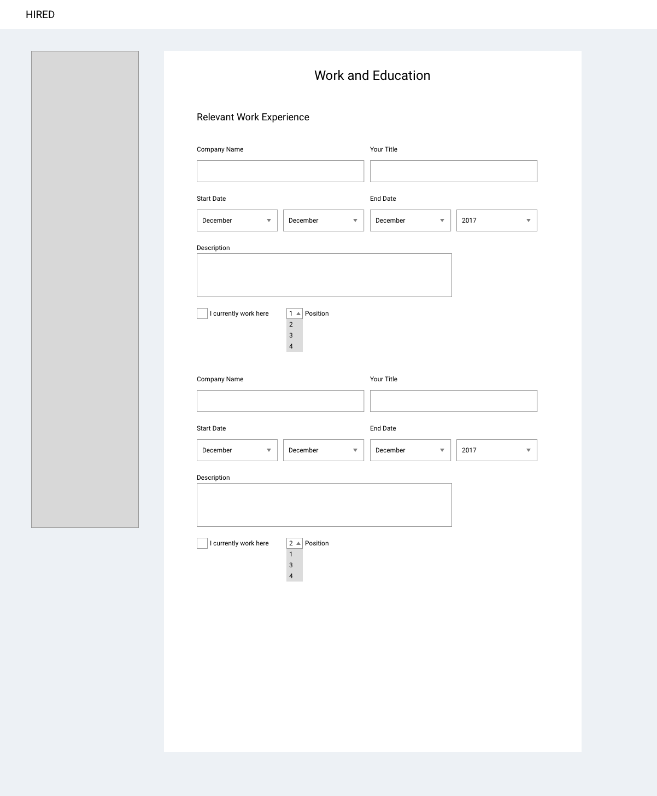
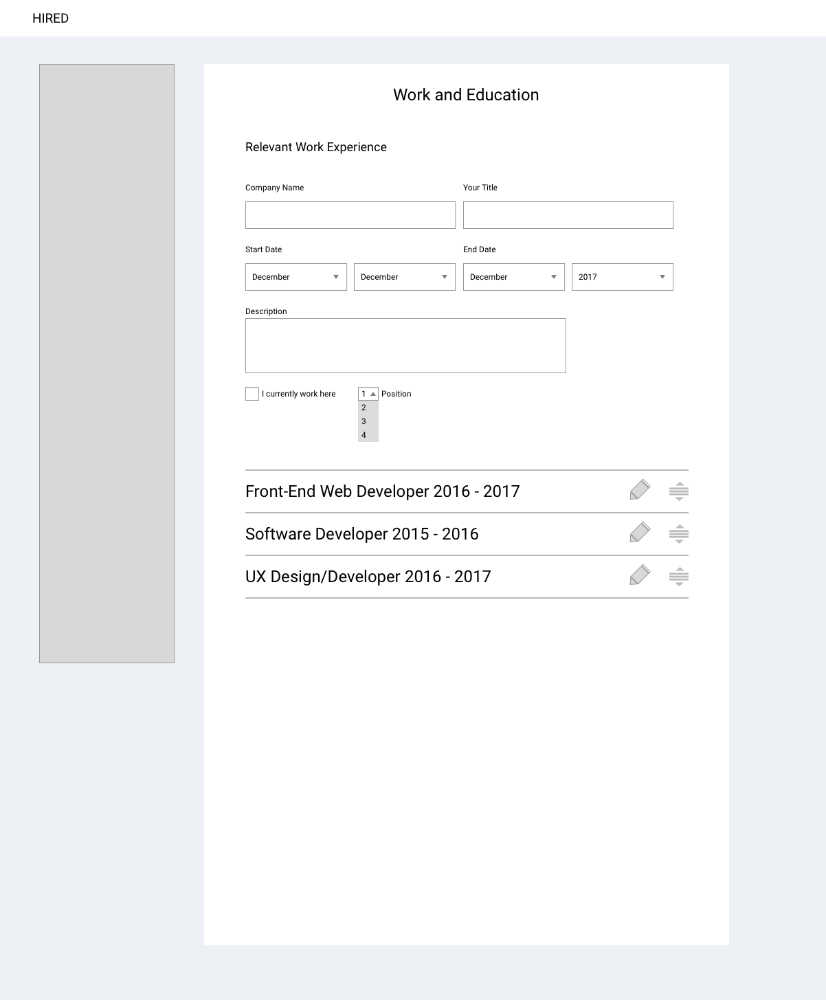
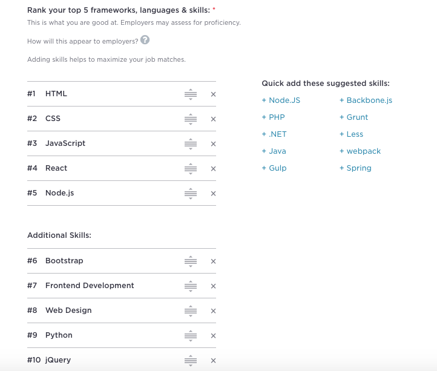
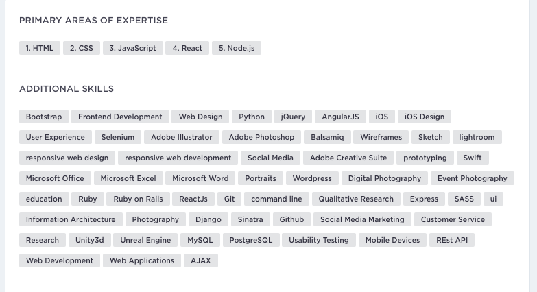

Most recruiters I have talked to always tell me to “highlight my best skills and experience”. It makes sense but unfortunately most job board sites default to more recent experience. They leaves someone like me in a really strange position. I put all my work experience down and not have incredibly relevant experience possibly buried, or I leave gaps in my experience to have the relevant experience prominently shown. Of course I can be considered a fringe case but what is the harm in letting people make their own decisions on how information on the profile is shown?
Using Sketch, I made a simple mockup of the Work and Education section of Hired’s profile area with some potential changes. Of course these ideas come with a development in mind. As someone who has worked in development, I didn’t want to make contrived or unnecessarily difficult changes to the platform and make devs angry. I wanted something more thought out and natural and I think I have done that. But “WHY?!” you ask? I have some free time and like to solve problems. Also bored. Very, very bored.
Now that you've heard I have a problem we can now take a closer look
Ignoring my inability to write about myself for a moment, I am looking for jobs in web development and/or UX. Photography and substitute teaching don’t really scream desirable candidate. It’s only after you click “Show More” where you find more of my relevant experience.
So we can see how our experience is being organized and it makes sense. Unfortunately we don’t have the kind of control that we could (should?) have. The user side is pretty simple. Input boxes, check boxes, text boxes, delete trashcan icon, and an add more button. It all makes sense but it’s more about the end result.
There are three solutions that I think are simple and easy if we wanted to give the User a little more control. First would be just having a “Relevant Work Experience” and an “Other Work Experience”. Here the User can control what is being shown without having gaps of less relevant experience being ignored or completely left out.
“But what’s that ‘Position’” dropdown?” you ask. That was my first solution that I forgot to remove for the Other Experience solution and it works with that solution too. But here we can just choose what order we want our experience to be displayed. A little more tedious but a simple sorting solution.
My final (and i think best) solution is more user friendly than the rest. Making moveable pieces is a simple and visually easy way to organize your work experience. This is already implemented it in the “Roles and Skills” section of the profile creation. While it is not 1-to-1, the code used can be easily replicated to work with the “Works and Education” section.
  